The load capacitance expressed as the sum of an intrinsic component,  contributed by and
contributed by and  of the inverter, and an extrinsic component, .
of the inverter, and an extrinsic component, .
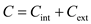
For equivalent-resistance approach, the expression for propagation delay is,
Substitute for  in the equation.
in the equation.
Substitute 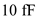 for , 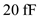 for and 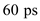 for  in the equation.
in the equation.
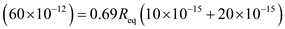 …… (1)
For the minimum size-inverteris , increasing 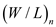 and  by the factor
by the factor  reduces by the same factor.
reduces by the same factor.
Substitute for  , for
, for  and 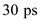 for in the equation.
and 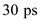 for in the equation.
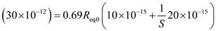 …… (2)
Divide the equation (1) by equation (2), to calculate the value of factor .
.
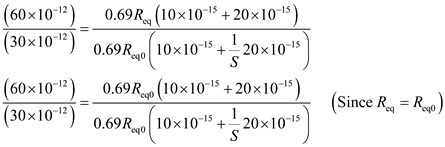
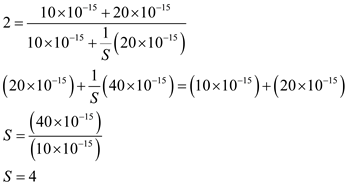
Thus, the increasing and 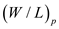 of the inverter by a factor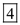, then propagation delay  reduces from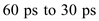.
reduces from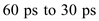.